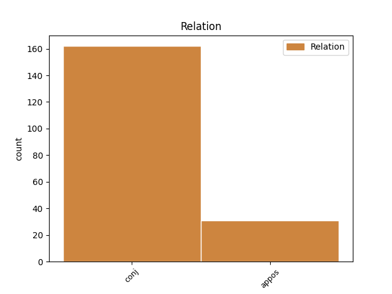
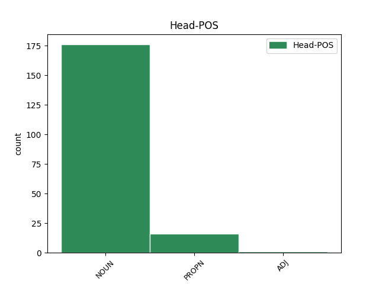
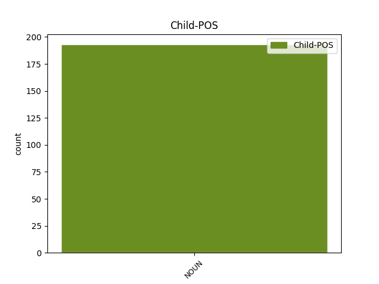

Distribution of features within this leaf



Agreement Rules sorted by frequency.
- When the dependent token is the conjunct(conj) of the head token, and the dependent token is NOUN.
1 Tá _ _ _ _ 0 _ _ _
2 meáin _ _ _ _ 0 _ _ _
3 na _ _ _ _ 0 _ _ _
4 tíre _ _ _ _ 0 _ _ _
5 seo _ _ _ _ 0 _ _ _
6 ag _ _ _ _ 0 _ _ _
7 déanamh _ _ _ _ 0 _ _ _
8 ' _ _ _ _ 0 _ _ _
9 ionsaí ionsaí NOUN Noun Case=NomAcc|Gender=Masc|Number=Sing 0 _ _ _
10 gan _ _ _ _ 0 _ _ _
11 trócaire _ _ _ _ 0 _ _ _
12 ' _ _ _ _ 0 _ _ _
13 agus _ _ _ _ 0 _ _ _
14 ' _ _ _ _ 0 _ _ _
15 géarleanúint géarleanúint NOUN Noun Case=NomAcc|Gender=Fem|Number=Sing 9 conj _ _
16 mhíshláintiúil _ _ _ _ 0 _ _ _
17 ' _ _ _ _ 0 _ _ _
18 ar _ _ _ _ 0 _ _ _
19 thábhairneoirí _ _ _ _ 0 _ _ _
20 na _ _ _ _ 0 _ _ _
21 tíre _ _ _ _ 0 _ _ _
22 seo _ _ _ _ 0 _ _ _
23 . _ _ _ _ 0 _ _ _
1 Bhí _ _ _ _ 0 _ _ _
2 scaifte _ _ _ _ 0 _ _ _
3 maith _ _ _ _ 0 _ _ _
4 sa _ _ _ _ 0 _ _ _
5 tábhairne tábhairne NOUN Noun Case=NomAcc|Definite=Def|Gender=Masc|Number=Sing 0 _ _ _
6 seo _ _ _ _ 0 _ _ _
7 anois _ _ _ _ 0 _ _ _
8 , _ _ _ _ 0 _ _ _
9 an _ _ _ _ 0 _ _ _
10 ceann ceann NOUN Noun Case=NomAcc|Definite=Def|Gender=Masc|Number=Sing 5 appos _ _
11 amháin _ _ _ _ 0 _ _ _
12 i _ _ _ _ 0 _ _ _
13 mBaile _ _ _ _ 0 _ _ _
14 an _ _ _ _ 0 _ _ _
15 Chaolais _ _ _ _ 0 _ _ _
16 ach _ _ _ _ 0 _ _ _
17 ar _ _ _ _ 0 _ _ _
18 ndóigh _ _ _ _ 0 _ _ _
19 go _ _ _ _ 0 _ _ _
20 leor _ _ _ _ 0 _ _ _
21 óstáin _ _ _ _ 0 _ _ _
22 . _ _ _ _ 0 _ _ _
Disagree Examples:
1 ' _ _ _ _ 0 _ _ _
2 Dadaí _ _ _ _ 0 _ _ _
3 ' _ _ _ _ 0 _ _ _
4 agus _ _ _ _ 0 _ _ _
5 ' _ _ _ _ 0 _ _ _
6 Mamaí _ _ _ _ 0 _ _ _
7 ' _ _ _ _ 0 _ _ _
8 seachas _ _ _ _ 0 _ _ _
9 ' _ _ _ _ 0 _ _ _
10 mo _ _ _ _ 0 _ _ _
11 dheaide dheaide NOUN Noun Case=NomAcc|Gender=Fem|Number=Sing 0 _ _ _
12 ' _ _ _ _ 0 _ _ _
13 agus _ _ _ _ 0 _ _ _
14 ' _ _ _ _ 0 _ _ _
15 mo _ _ _ _ 0 _ _ _
16 mhaime mam NOUN Noun Case=Gen|Form=Len|Gender=Fem|Number=Sing 11 conj _ SpaceAfter=No
17 ' _ _ _ _ 0 _ _ _
18 a _ _ _ _ 0 _ _ _
19 thugaidís _ _ _ _ 0 _ _ _
20 ar _ _ _ _ 0 _ _ _
21 a _ _ _ _ 0 _ _ _
22 n-athair _ _ _ _ 0 _ _ _
23 agus _ _ _ _ 0 _ _ _
24 a _ _ _ _ 0 _ _ _
25 máthair _ _ _ _ 0 _ _ _
26 . _ _ _ _ 0 _ _ _
1 Tá _ _ _ _ 0 _ _ _
2 stádas _ _ _ _ 0 _ _ _
3 faoi _ _ _ _ 0 _ _ _
4 leith _ _ _ _ 0 _ _ _
5 ag _ _ _ _ 0 _ _ _
6 an _ _ _ _ 0 _ _ _
7 UDA _ _ _ _ 0 _ _ _
8 sa _ _ _ _ 0 _ _ _
9 tSeanchill _ _ _ _ 0 _ _ _
10 cionn _ _ _ _ 0 _ _ _
11 is _ _ _ _ 0 _ _ _
12 stair stair NOUN Noun Case=NomAcc|Gender=Fem|Number=Sing 0 _ _ _
13 an _ _ _ _ 0 _ _ _
14 eagrais _ _ _ _ 0 _ _ _
15 agus _ _ _ _ 0 _ _ _
16 cionn ceann NOUN Noun Case=Dat|Gender=Fem|Number=Sing 12 conj _ _
17 is _ _ _ _ 0 _ _ _
18 gur _ _ _ _ 0 _ _ _
19 ansin _ _ _ _ 0 _ _ _
20 is _ _ _ _ 0 _ _ _
21 mó _ _ _ _ 0 _ _ _
22 a _ _ _ _ 0 _ _ _
23 bunaíodh _ _ _ _ 0 _ _ _
24 is _ _ _ _ 0 _ _ _
25 a _ _ _ _ 0 _ _ _
26 buanaíodh _ _ _ _ 0 _ _ _
27 é _ _ _ _ 0 _ _ _
28 . _ _ _ _ 0 _ _ _
1 na _ _ _ _ 0 _ _ _
2 difríochtaí _ _ _ _ 0 _ _ _
3 ó _ _ _ _ 0 _ _ _
4 thaobh _ _ _ _ 0 _ _ _
5 airíonna _ _ _ _ 0 _ _ _
6 de _ _ _ _ 0 _ _ _
7 a _ _ _ _ 0 _ _ _
8 tharlaíonn _ _ _ _ 0 _ _ _
9 laistigh _ _ _ _ 0 _ _ _
10 de _ _ _ _ 0 _ _ _
11 speiceas _ _ _ _ 0 _ _ _
12 áirithe _ _ _ _ 0 _ _ _
13 ; _ _ _ _ 0 _ _ _
14 mar _ _ _ _ 0 _ _ _
15 shampla _ _ _ _ 0 _ _ _
16 , _ _ _ _ 0 _ _ _
17 bíonn _ _ _ _ 0 _ _ _
18 daoine _ _ _ _ 0 _ _ _
19 difriúil _ _ _ _ 0 _ _ _
20 ó _ _ _ _ 0 _ _ _
21 thaobh _ _ _ _ 0 _ _ _
22 dath _ _ _ _ 0 _ _ _
23 a _ _ _ _ 0 _ _ _
24 gcuid cuid NOUN Noun Case=NomAcc|Form=Ecl|Gender=Fem|Number=Sing 0 _ _ _
25 gruaige _ _ _ _ 0 _ _ _
26 , _ _ _ _ 0 _ _ _
27 a _ _ _ _ 0 _ _ _
28 súl súil NOUN Noun Case=Gen|Gender=Fem|NounType=Weak|Number=Plur 24 conj _ _
29 agus _ _ _ _ 0 _ _ _
30 a _ _ _ _ 0 _ _ _
31 gcraicne _ _ _ _ 0 _ _ _
32 de _ _ _ _ 0 _ _ _
33 agus _ _ _ _ 0 _ _ _
34 bíonn _ _ _ _ 0 _ _ _
35 siad _ _ _ _ 0 _ _ _
36 difriúil _ _ _ _ 0 _ _ _
37 ó _ _ _ _ 0 _ _ _
38 thaobh _ _ _ _ 0 _ _ _
39 méid _ _ _ _ 0 _ _ _
40 de _ _ _ _ 0 _ _ _
41 freisin _ _ _ _ 0 _ _ _
42 athrú _ _ _ _ 0 _ _ _
43 gáis _ _ _ _ 0 _ _ _
44 go _ _ _ _ 0 _ _ _
45 leacht _ _ _ _ 0 _ _ _
46 de _ _ _ _ 0 _ _ _
47 thoradh _ _ _ _ 0 _ _ _
48 fuaraithe _ _ _ _ 0 _ _ _
49 : _ _ _ _ 0 _ _ _
50 mar _ _ _ _ 0 _ _ _
51 shampla _ _ _ _ 0 _ _ _
52 , _ _ _ _ 0 _ _ _
53 athraíonn _ _ _ _ 0 _ _ _
54 an _ _ _ _ 0 _ _ _
55 ghal _ _ _ _ 0 _ _ _
56 ó _ _ _ _ 0 _ _ _
57 chiteal _ _ _ _ 0 _ _ _
58 atá _ _ _ _ 0 _ _ _
59 ar _ _ _ _ 0 _ _ _
60 fiuchadh _ _ _ _ 0 _ _ _
61 ina _ _ _ _ 0 _ _ _
62 leacht _ _ _ _ 0 _ _ _
63 nuair _ _ _ _ 0 _ _ _
64 a _ _ _ _ 0 _ _ _
65 bhuaileann _ _ _ _ 0 _ _ _
66 sí _ _ _ _ 0 _ _ _
67 le _ _ _ _ 0 _ _ _
68 balla _ _ _ _ 0 _ _ _
69 fuar _ _ _ _ 0 _ _ _
70 cistine _ _ _ _ 0 _ _ _
71 comhthionól _ _ _ _ 0 _ _ _
72 ball _ _ _ _ 0 _ _ _
73 a _ _ _ _ 0 _ _ _
74 thiomáineann _ _ _ _ 0 _ _ _
75 fuil _ _ _ _ 0 _ _ _
76 ar _ _ _ _ 0 _ _ _
77 fud _ _ _ _ 0 _ _ _
78 an _ _ _ _ 0 _ _ _
79 choirp _ _ _ _ 0 _ _ _
80 ; _ _ _ _ 0 _ _ _
81 is _ _ _ _ 0 _ _ _
82 é _ _ _ _ 0 _ _ _
83 ráta _ _ _ _ 0 _ _ _
84 cuisle _ _ _ _ 0 _ _ _
85 duine _ _ _ _ 0 _ _ _
86 fhásta _ _ _ _ 0 _ _ _
87 ná _ _ _ _ 0 _ _ _
88 thart _ _ _ _ 0 _ _ _
89 ar _ _ _ _ 0 _ _ _
90 70 _ _ _ _ 0 _ _ _
91 buille _ _ _ _ 0 _ _ _
92 in _ _ _ _ 0 _ _ _
93 aghaidh _ _ _ _ 0 _ _ _
94 an _ _ _ _ 0 _ _ _
95 nóiméid _ _ _ _ 0 _ _ _
96 , _ _ _ _ 0 _ _ _
97 ach _ _ _ _ 0 _ _ _
98 bíonn _ _ _ _ 0 _ _ _
99 sí _ _ _ _ 0 _ _ _
100 i _ _ _ _ 0 _ _ _
101 bhfad _ _ _ _ 0 _ _ _
102 níos _ _ _ _ 0 _ _ _
103 tapúla _ _ _ _ 0 _ _ _
104 ag _ _ _ _ 0 _ _ _
105 leanbh _ _ _ _ 0 _ _ _
106 ; _ _ _ _ 0 _ _ _
107 trí _ _ _ _ 0 _ _ _
108 ghréasán _ _ _ _ 0 _ _ _
109 d' _ _ _ _ 0 _ _ _
110 fhéitheanna _ _ _ _ 0 _ _ _
111 a _ _ _ _ 0 _ _ _
112 ghluaiseann _ _ _ _ 0 _ _ _
113 an _ _ _ _ 0 _ _ _
114 fhuil _ _ _ _ 0 _ _ _
115 ; _ _ _ _ 0 _ _ _
116 fágann _ _ _ _ 0 _ _ _
117 an _ _ _ _ 0 _ _ _
118 fhuil _ _ _ _ 0 _ _ _
119 an _ _ _ _ 0 _ _ _
120 croí _ _ _ _ 0 _ _ _
121 trí _ _ _ _ 0 _ _ _
122 artairí _ _ _ _ 0 _ _ _
123 agus _ _ _ _ 0 _ _ _
124 filleann _ _ _ _ 0 _ _ _
125 sí _ _ _ _ 0 _ _ _
126 ar _ _ _ _ 0 _ _ _
127 an _ _ _ _ 0 _ _ _
128 gcroí _ _ _ _ 0 _ _ _
129 trí _ _ _ _ 0 _ _ _
130 fhéitheanna _ _ _ _ 0 _ _ _
131 achar _ _ _ _ 0 _ _ _
132 beag _ _ _ _ 0 _ _ _
133 , _ _ _ _ 0 _ _ _
134 thart _ _ _ _ 0 _ _ _
135 ar _ _ _ _ 0 _ _ _
136 mhéadar _ _ _ _ 0 _ _ _
137 cearnach _ _ _ _ 0 _ _ _
138 de _ _ _ _ 0 _ _ _
139 ghnáth _ _ _ _ 0 _ _ _
140 , _ _ _ _ 0 _ _ _
141 a _ _ _ _ 0 _ _ _
142 léiríonn _ _ _ _ 0 _ _ _
143 na _ _ _ _ 0 _ _ _
144 plandaí _ _ _ _ 0 _ _ _
145 go _ _ _ _ 0 _ _ _
146 léir _ _ _ _ 0 _ _ _
147 a _ _ _ _ 0 _ _ _
148 fhásann _ _ _ _ 0 _ _ _
149 sa _ _ _ _ 0 _ _ _
150 réimse _ _ _ _ 0 _ _ _
151 sin _ _ _ _ 0 _ _ _
152 ; _ _ _ _ 0 _ _ _
153 is _ _ _ _ 0 _ _ _
154 féidir _ _ _ _ 0 _ _ _
155 ceann _ _ _ _ 0 _ _ _
156 a _ _ _ _ 0 _ _ _
157 dhéanamh _ _ _ _ 0 _ _ _
158 as _ _ _ _ 0 _ _ _
159 píosaí _ _ _ _ 0 _ _ _
160 sreinge _ _ _ _ 0 _ _ _
161 , _ _ _ _ 0 _ _ _
162 corda _ _ _ _ 0 _ _ _
163 nó _ _ _ _ 0 _ _ _
164 adhmaid _ _ _ _ 0 _ _ _
165 an _ _ _ _ 0 _ _ _
166 ráta _ _ _ _ 0 _ _ _
167 ar _ _ _ _ 0 _ _ _
168 a _ _ _ _ 0 _ _ _
169 gcuirtear _ _ _ _ 0 _ _ _
170 obair _ _ _ _ 0 _ _ _
171 i _ _ _ _ 0 _ _ _
172 gcrích _ _ _ _ 0 _ _ _
173 , _ _ _ _ 0 _ _ _
174 is _ _ _ _ 0 _ _ _
175 é _ _ _ _ 0 _ _ _
176 sin _ _ _ _ 0 _ _ _
177 , _ _ _ _ 0 _ _ _
178 an _ _ _ _ 0 _ _ _
179 méid _ _ _ _ 0 _ _ _
180 oibre _ _ _ _ 0 _ _ _
181 a _ _ _ _ 0 _ _ _
182 dhéantar _ _ _ _ 0 _ _ _
183 in _ _ _ _ 0 _ _ _
184 aghaidh _ _ _ _ 0 _ _ _
185 an _ _ _ _ 0 _ _ _
186 tsecoind _ _ _ _ 0 _ _ _
187 ; _ _ _ _ 0 _ _ _
188 is _ _ _ _ 0 _ _ _
189 é _ _ _ _ 0 _ _ _
190 an _ _ _ _ 0 _ _ _
191 watt _ _ _ _ 0 _ _ _
192 (W) _ _ _ _ 0 _ _ _
193 an _ _ _ _ 0 _ _ _
194 t-aonad _ _ _ _ 0 _ _ _
195 cumhachta _ _ _ _ 0 _ _ _
196 rud _ _ _ _ 0 _ _ _
197 ar _ _ _ _ 0 _ _ _
198 bith _ _ _ _ 0 _ _ _
199 a _ _ _ _ 0 _ _ _
200 ghlacann _ _ _ _ 0 _ _ _
201 spás _ _ _ _ 0 _ _ _
202 agus _ _ _ _ 0 _ _ _
203 a _ _ _ _ 0 _ _ _
204 bhfuil _ _ _ _ 0 _ _ _
205 mais _ _ _ _ 0 _ _ _
206 aige _ _ _ _ 0 _ _ _
207 ; _ _ _ _ 0 _ _ _
208 is _ _ _ _ 0 _ _ _
209 féidir _ _ _ _ 0 _ _ _
210 mais _ _ _ _ 0 _ _ _
211 a _ _ _ _ 0 _ _ _
212 thabhairt _ _ _ _ 0 _ _ _
213 ar _ _ _ _ 0 _ _ _
214 gach _ _ _ _ 0 _ _ _
215 uile _ _ _ _ 0 _ _ _
216 shubstaint _ _ _ _ 0 _ _ _
217 agus _ _ _ _ 0 _ _ _
218 ábhar _ _ _ _ 0 _ _ _
219 ; _ _ _ _ 0 _ _ _
220 úsáidtear _ _ _ _ 0 _ _ _
221 na _ _ _ _ 0 _ _ _
222 téarmaí _ _ _ _ 0 _ _ _
223 solad _ _ _ _ 0 _ _ _
224 , _ _ _ _ 0 _ _ _
225 leacht _ _ _ _ 0 _ _ _
226 agus _ _ _ _ 0 _ _ _
227 gás _ _ _ _ 0 _ _ _
228 chun _ _ _ _ 0 _ _ _
229 cur _ _ _ _ 0 _ _ _
230 síos _ _ _ _ 0 _ _ _
231 ar _ _ _ _ 0 _ _ _
232 thrí _ _ _ _ 0 _ _ _
233 staid _ _ _ _ 0 _ _ _
234 ábhair _ _ _ _ 0 _ _ _
235 ; _ _ _ _ 0 _ _ _
236 is _ _ _ _ 0 _ _ _
237 féidir _ _ _ _ 0 _ _ _
238 staid _ _ _ _ 0 _ _ _
239 amháin _ _ _ _ 0 _ _ _
240 a _ _ _ _ 0 _ _ _
241 thiontú _ _ _ _ 0 _ _ _
242 go _ _ _ _ 0 _ _ _
243 staid _ _ _ _ 0 _ _ _
244 eile _ _ _ _ 0 _ _ _
245 trí _ _ _ _ 0 _ _ _
246 théamh _ _ _ _ 0 _ _ _
247 nó _ _ _ _ 0 _ _ _
248 fhuarú _ _ _ _ 0 _ _ _
249 dath _ _ _ _ 0 _ _ _
250 príomhúil _ _ _ _ 0 _ _ _
251 is _ _ _ _ 0 _ _ _
252 iad _ _ _ _ 0 _ _ _
253 dathanna _ _ _ _ 0 _ _ _
254 príomhúla _ _ _ _ 0 _ _ _
255 an _ _ _ _ 0 _ _ _
256 tsolais _ _ _ _ 0 _ _ _
257 ná _ _ _ _ 0 _ _ _
258 dearg _ _ _ _ 0 _ _ _
259 , _ _ _ _ 0 _ _ _
260 uaine _ _ _ _ 0 _ _ _
261 agus _ _ _ _ 0 _ _ _
262 gorm _ _ _ _ 0 _ _ _
263 ; _ _ _ _ 0 _ _ _
264 faightear _ _ _ _ 0 _ _ _
265 solas _ _ _ _ 0 _ _ _
266 geal _ _ _ _ 0 _ _ _
267 nuair _ _ _ _ 0 _ _ _
268 a _ _ _ _ 0 _ _ _
269 mheasctar _ _ _ _ 0 _ _ _
270 na _ _ _ _ 0 _ _ _
271 trí _ _ _ _ 0 _ _ _
272 chineál _ _ _ _ 0 _ _ _
273 le _ _ _ _ 0 _ _ _
274 chéile _ _ _ _ 0 _ _ _
275 go _ _ _ _ 0 _ _ _
276 cionchothrom _ _ _ _ 0 _ _ _
277 ; _ _ _ _ 0 _ _ _
278 nuair _ _ _ _ 0 _ _ _
279 a _ _ _ _ 0 _ _ _
280 mheasctar _ _ _ _ 0 _ _ _
281 dhá _ _ _ _ 0 _ _ _
282 dhath _ _ _ _ 0 _ _ _
283 phríomhúla _ _ _ _ 0 _ _ _
284 le _ _ _ _ 0 _ _ _
285 chéile _ _ _ _ 0 _ _ _
286 faightear _ _ _ _ 0 _ _ _
287 ceann _ _ _ _ 0 _ _ _
288 de _ _ _ _ 0 _ _ _
289 na _ _ _ _ 0 _ _ _
290 dathanna _ _ _ _ 0 _ _ _
291 tánaisteacha _ _ _ _ 0 _ _ _
292 , _ _ _ _ 0 _ _ _
293 leithéidí _ _ _ _ 0 _ _ _
294 buí _ _ _ _ 0 _ _ _
295 , _ _ _ _ 0 _ _ _
296 cian _ _ _ _ 0 _ _ _
297 agus _ _ _ _ 0 _ _ _
298 magenta _ _ _ _ 0 _ _ _
299 ; _ _ _ _ 0 _ _ _
300 is _ _ _ _ 0 _ _ _
301 iad _ _ _ _ 0 _ _ _
302 dathanna _ _ _ _ 0 _ _ _
303 príomhúla _ _ _ _ 0 _ _ _
304 péinte _ _ _ _ 0 _ _ _
305 ná _ _ _ _ 0 _ _ _
306 dearg _ _ _ _ 0 _ _ _
307 , _ _ _ _ 0 _ _ _
308 buí _ _ _ _ 0 _ _ _
309 agus _ _ _ _ 0 _ _ _
310 gorm _ _ _ _ 0 _ _ _
311 . _ _ _ _ 0 _ _ _
1 (2) _ _ _ _ 0 _ _ _
2 Déanfaidh _ _ _ _ 0 _ _ _
3 iniúchóir _ _ _ _ 0 _ _ _
4 arna _ _ _ _ 0 _ _ _
5 cheapadh _ _ _ _ 0 _ _ _
6 nó _ _ _ _ 0 _ _ _
7 arna _ _ _ _ 0 _ _ _
8 ceapadh _ _ _ _ 0 _ _ _
9 faoi _ _ _ _ 0 _ _ _
10 fho-alt _ _ _ _ 0 _ _ _
11 (1) _ _ _ _ 0 _ _ _
12 tuarascáil _ _ _ _ 0 _ _ _
13 i _ _ _ _ 0 _ _ _
14 scríbhinn _ _ _ _ 0 _ _ _
15 a _ _ _ _ 0 _ _ _
16 ullmhú _ _ _ _ 0 _ _ _
17 i _ _ _ _ 0 _ _ _
18 dtaobh _ _ _ _ 0 _ _ _
19 torthaí _ _ _ _ 0 _ _ _
20 aon _ _ _ _ 0 _ _ _
21 scrúduithe scrúdú NOUN Noun Case=Gen|Gender=Masc|NounType=Strong|Number=Plur 0 _ _ _
22 agus _ _ _ _ 0 _ _ _
23 imscrúduithe scrúdú NOUN Noun Case=NomAcc|Gender=Masc|Number=Plur 21 conj _ _
24 a _ _ _ _ 0 _ _ _
25 bheidh _ _ _ _ 0 _ _ _
26 déanta _ _ _ _ 0 _ _ _
27 aige _ _ _ _ 0 _ _ _
28 nó _ _ _ _ 0 _ _ _
29 aici _ _ _ _ 0 _ _ _
30 faoin _ _ _ _ 0 _ _ _
31 alt _ _ _ _ 0 _ _ _
32 seo _ _ _ _ 0 _ _ _
33 agus _ _ _ _ 0 _ _ _
34 déanfaidh _ _ _ _ 0 _ _ _
35 sé _ _ _ _ 0 _ _ _
36 nó _ _ _ _ 0 _ _ _
37 sí _ _ _ _ 0 _ _ _
38 , _ _ _ _ 0 _ _ _
39 má _ _ _ _ 0 _ _ _
40 iarrann _ _ _ _ 0 _ _ _
41 agus _ _ _ _ 0 _ _ _
42 aon _ _ _ _ 0 _ _ _
43 uair _ _ _ _ 0 _ _ _
44 a _ _ _ _ 0 _ _ _
45 iarrann _ _ _ _ 0 _ _ _
46 an _ _ _ _ 0 _ _ _
47 tArd- _ _ _ _ 0 _ _ _
48 Reachtaire _ _ _ _ 0 _ _ _
49 amhlaidh _ _ _ _ 0 _ _ _
50 air _ _ _ _ 0 _ _ _
51 nó _ _ _ _ 0 _ _ _
52 uirthi _ _ _ _ 0 _ _ _
53 é _ _ _ _ 0 _ _ _
54 , _ _ _ _ 0 _ _ _
55 tuarascáil _ _ _ _ 0 _ _ _
56 eatramhach _ _ _ _ 0 _ _ _
57 i _ _ _ _ 0 _ _ _
58 scríbhinn _ _ _ _ 0 _ _ _
59 a _ _ _ _ 0 _ _ _
60 ullmhú _ _ _ _ 0 _ _ _
61 i _ _ _ _ 0 _ _ _
62 ndáil _ _ _ _ 0 _ _ _
63 le _ _ _ _ 0 _ _ _
64 haon _ _ _ _ 0 _ _ _
65 scrúduithe _ _ _ _ 0 _ _ _
66 agus _ _ _ _ 0 _ _ _
67 imscrúduithe _ _ _ _ 0 _ _ _
68 den _ _ _ _ 0 _ _ _
69 sórt _ _ _ _ 0 _ _ _
70 sin _ _ _ _ 0 _ _ _
71 agus _ _ _ _ 0 _ _ _
72 cuirfidh _ _ _ _ 0 _ _ _
73 sé _ _ _ _ 0 _ _ _
74 nó _ _ _ _ 0 _ _ _
75 sí _ _ _ _ 0 _ _ _
76 faoi _ _ _ _ 0 _ _ _
77 deara _ _ _ _ 0 _ _ _
78 aon _ _ _ _ 0 _ _ _
79 tuarascáil _ _ _ _ 0 _ _ _
80 den _ _ _ _ 0 _ _ _
81 sórt _ _ _ _ 0 _ _ _
82 sin _ _ _ _ 0 _ _ _
83 a _ _ _ _ 0 _ _ _
84 chur _ _ _ _ 0 _ _ _
85 ar _ _ _ _ 0 _ _ _
86 fáil _ _ _ _ 0 _ _ _
87 don _ _ _ _ 0 _ _ _
88 Ard-Reachtaire _ _ _ _ 0 _ _ _
89 . _ _ _ _ 0 _ _ _
1 clórafluaracarbóin _ _ _ _ 0 _ _ _
2 Gáis _ _ _ _ 0 _ _ _
3 a _ _ _ _ 0 _ _ _
4 úsáidtear _ _ _ _ 0 _ _ _
5 i _ _ _ _ 0 _ _ _
6 gcannaí _ _ _ _ 0 _ _ _
7 aerasóil _ _ _ _ 0 _ _ _
8 áirithe _ _ _ _ 0 _ _ _
9 , _ _ _ _ 0 _ _ _
10 i _ _ _ _ 0 _ _ _
11 gcuisneoirí _ _ _ _ 0 _ _ _
12 agus _ _ _ _ 0 _ _ _
13 i _ _ _ _ 0 _ _ _
14 ndéantús déantús NOUN Noun Case=NomAcc|Form=Ecl|Gender=Masc|Number=Sing 0 _ _ _
15 cupán _ _ _ _ 0 _ _ _
16 agus _ _ _ _ 0 _ _ _
17 coimeádán coimeádán NOUN Noun Case=Gen|Gender=Masc|NounType=Weak|Number=Plur 14 conj _ _
18 plaisteach _ _ _ _ 0 _ _ _
19 áirithe _ _ _ _ 0 _ _ _
20 . _ _ _ _ 0 _ _ _